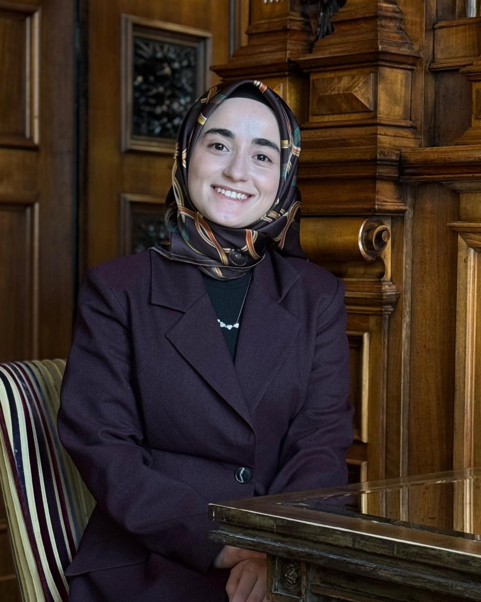
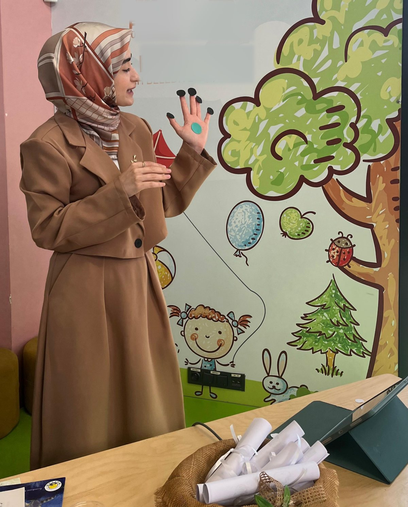

Çalışma yaklaşımı
Önce anlamak
Çocuğun ve ailenin ihtiyacını yargısız ve bütüncül bir görüşme diliyle değerlendiririm.

Üsküdar Üniversitesi Çocuk Gelişimi bölümünün ardından Karabük Üniversitesi'nde yüksek lisansımı tamamladım ve doktora çalışmalarıma devam ediyorum.
Akademik çalışmalarımda çocukların günlük yaşam rutinleri, ritüelleri, duygu regülasyonu ve ebeveynlik farkındalığı gibi konulara odaklanıyorum. Danışmanlık sürecinde bilimsel değerlendirme ile ailenin gerçek yaşam ritmini birlikte ele alıyorum.
Çocukların gelişimsel, bilişsel, dikkat ve öğrenme süreçlerini daha bütüncül değerlendirebilmek için bilimsel temelli test ve müdahale programlarından yararlanıyorum.

Çocuk gelişimi etkinliğinde sunum anıÇalışma yaklaşımı
Çocuğun ve ailenin ihtiyacını yargısız ve bütüncül bir görüşme diliyle değerlendiririm.
Uzmanlık
Gelişimsel değerlendirme, erken müdahale, ebeveyn danışmanlığı ile aile ve çift danışmanlığı süreçlerini planlarım.
Uygulama
Görüşme çıktılarının aile yaşamına uygulanabilir, sade ve sürdürülebilir olmasına önem veririm.
İletişim
E-posta veya iletişim formu üzerinden ulaşabilirsiniz.